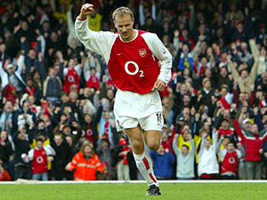

Club Records

Players
- The youngest player appears in a official match
Jack Wilshere played the first match for the club when he just was 16 years old.
- The most overall scorer
Thiery Henry scored 227 goals for Arsenal in his career and this is the most goals overall of the club so far.
- The player has the most appearances overall
David O'leary had played 772 matches for the club during his career.
- The player has the most beautiful goal

Denis Bergkamp is known as the player of the beautiful goals, in his goals, the goal scoring in the match against Everton is the most
beautiful goal. He received a very long pass from Robert Pires from distance about 50 metres by processing utmost technically in two touches,
then he kicked the ball went to the net in the suprising of goal keeper. Because of limiting in this subject, the video was not uploaded; thus
if you wish to watch this great goal, you can search on youtube, cheer!
The Club
- The longest unbeaten chain
The club became a club having the longest unbeaten chain with 49 matches. This achievement had helped the club obtain Premier League in season 2003-2004.
The club just be stopped by Manchester United in season 2004-2005. This record not only is a record of the club, but also is a record of Premier League so far.
This record would be and ever be the most pride of the club.